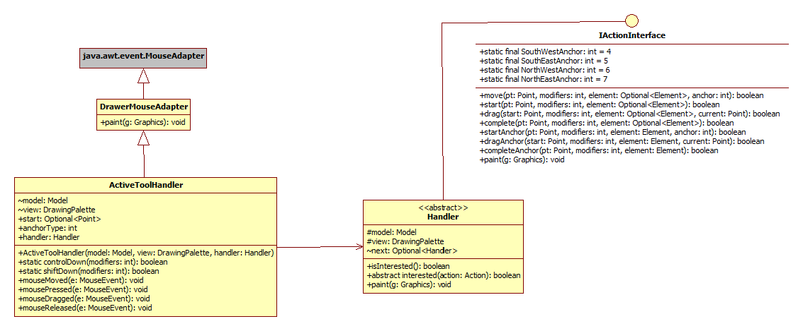

public class ActiveToolHandler extends DrawerMouseAdapter
IActionInterface, based on the active tool.
This class provides the concrete implementation of an Adapter, that converts incoming events from one
interface (MouseListener, MouseMotionListener) into an outgoing sequence of different events on
another interface (IActionInterface).
Adapters can store transient state as they perform their work. This adapter keeps tract of:
IActionInterface handler.
| Constructor and Description |
|---|
ActiveToolHandler(Model model,
DrawingPalette view,
IActionInterface handler) |
| Modifier and Type | Method and Description |
|---|---|
static boolean |
controlDown(int modifiers)
Helper method to detect is CONTROL key is done.
|
void |
mouseDragged(java.awt.event.MouseEvent e) |
void |
mouseMoved(java.awt.event.MouseEvent e)
Responsible for identifying anchorType when hovering over one, or just an ordinary
element.
|
void |
mousePressed(java.awt.event.MouseEvent e) |
void |
mouseReleased(java.awt.event.MouseEvent e) |
void |
paint(java.awt.Graphics g)
Pass on to all registered handlers.
|
static boolean |
shiftDown(int modifiers)
Helper method to detect is SHIFT key is done.
|
public ActiveToolHandler(Model model, DrawingPalette view, IActionInterface handler)
public final void mouseDragged(java.awt.event.MouseEvent e)
mouseDragged in interface java.awt.event.MouseMotionListenermouseDragged in class java.awt.event.MouseAdapterpublic final void mousePressed(java.awt.event.MouseEvent e)
mousePressed in interface java.awt.event.MouseListenermousePressed in class java.awt.event.MouseAdapterpublic final void mouseReleased(java.awt.event.MouseEvent e)
mouseReleased in interface java.awt.event.MouseListenermouseReleased in class java.awt.event.MouseAdapterpublic final void mouseMoved(java.awt.event.MouseEvent e)
mouseMoved in interface java.awt.event.MouseMotionListenermouseMoved in class java.awt.event.MouseAdapterpublic static boolean shiftDown(int modifiers)
modifiers - Modifier keys from eventpublic static boolean controlDown(int modifiers)
modifiers - Modifier keys from eventpublic void paint(java.awt.Graphics g)
paint in class DrawerMouseAdapterg - Graphics object into which to draw